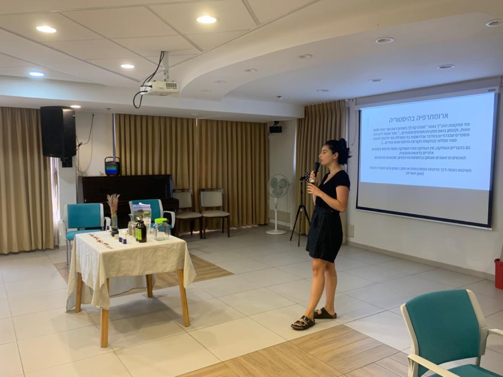

סדנאות לארגונים
מחפשים פסק זמן מהמירוץ לצוות שלכם? ארומתרפיה חווייתית, רוקחות טבעית, מיינדפולנס ויוגה — לעיריות, למתנ״סים, לצוותי חינוך ולחברות. אני מגיעה עם כל הציוד.
לכל הסדנאותאני יובל אבייב-דורון — נטורופתית מוסמכת, ארומתרפיסטית ומורה ליוגה. אני מלווה נשים בתהליכי החיים דרך טיפולים הוליסטיים, סדנאות ותנועה, בקליניקות בתל אביב ובעמק האלה.


מחפשים פסק זמן מהמירוץ לצוות שלכם? ארומתרפיה חווייתית, רוקחות טבעית, מיינדפולנס ויוגה — לעיריות, למתנ״סים, לצוותי חינוך ולחברות. אני מגיעה עם כל הציוד.
לכל הסדנאות
לחזור לנשום עמוק, להרגיש את השקט ולאפשר לגוף לרפא את עצמו. טיפול אישי שמתחיל בשיחה וממשיך עם תערובת שמנים ארומתרפיים, רייקי ורפלקסולוגיה עדינה — ובסופו תערובת שמנים אישית לבית.
לתיאום שיחה
המסע שלי החל בתקופת השירות הצבאי, כשאובחנתי עם מחלת קרוהן. קיבלתי את התווית המוכרת: ״מחלה כרונית״, יחד עם המרשם הקבוע לשיכוך כאבים. אך משהו בתוכי המשיך לשאול — האם יש דרך אחרת?
הדרך הזו הובילה אותי לתזונה, לצמחי מרפא, לעבודה פנימית — וללימודי נטורופתיה במכללת רידמן. היום אני מקדישה את חיי לליווי אחרים במסע האישי שלהם לריפוי.
לסיפור המלא ←בשבילי, יוגה היא ממש לא ״עוד אימון כושר״. זה המקום שבו לומדים להשקיט את המחשבות, לחבר בין הגוף לנפש, והכי חשוב — לגלות שאפשר לפעול ולהתקדם בעולם גם מתוך הרפיה, ולא רק מתוך מאמץ.
שיעורים אישיים וקבוצתיים, ושיעורי יוגה בחוץ לצוותים וקבוצות.

משחות, שמנים, תערובות למבער ומים פרחוניים שאני רוקחת בעבודת יד. כל תערובת מותאמת אישית — להזמנה בוואטסאפ.


״היה מאוד מהנה ומלמד! כבר פרסמתי לחברות והן עפו על זה. ממליצה בחום.״
משתתפת בסדנהאני מקבלת בשתי קליניקות — בתל אביב ובעמק האלה. חלק מהמפגשים מתקיימים גם בזום, כך שאפשר להצטרף מכל מקום. סדנאות לצוותים ולארגונים אני מעבירה בכל מקום שתבחרו, עם כל הציוד.
סקרנתי אותך? מוזמנת ליצור איתי קשר
לשיחה בוואטסאפ